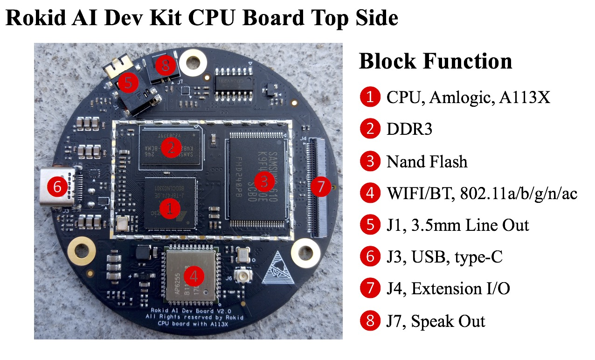
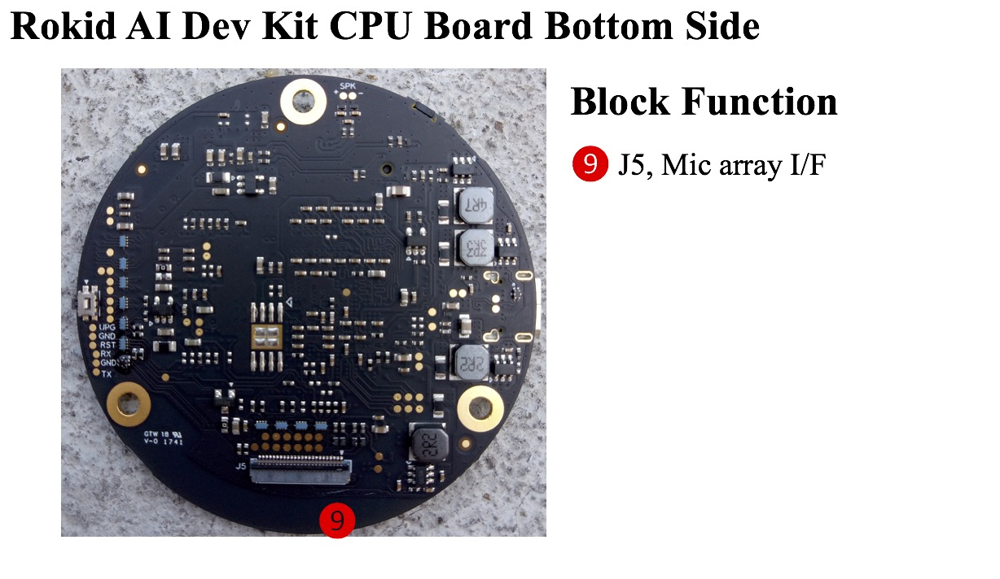

Amlogic/A113
注意 Amlogic/A113 开发手册目前只面向 Rokid 开发者提供。如未注册成为Rokid 开发者，请先至 Rokid 官网注册成为开发者。
硬件设计参考资料
温馨提示：以下链接里的内容需登陆Rokid讨论区后才能下载
- CPU 板原理图
radk_palm_a113x_cpu_board_sch_v2.0.pdf - MIC 板原理图
radk_palm_4mic_circular_pdm_bot_sch_v1.0.pdf - Debug 板原理图
radk_palm_debug_board_sch_v1.1.pdf
CPU 功能板介绍
 
软件设计参考资料
A113 软件用户向导
A113X_QRM V0.9 20170810-amlogicA113 GPIO 用户向导
Amlogic A113 GPIO Pinctrl User Manual V0.3-amlogic
代码获取
- repo 是Google官方版本
repo init -u ssh://your-account@openai.rokid.com:29418/amlogic_a113_audio/manifest -m rokidbase.xml
- repo 是Rokid 修正版本
repo init -u ssh://your-account@openai.rokid.com:29418/amlogic_a113_audio/manifest -m rokidbase.xml --repo-url=ssh://your-account@openai.rokid.com:29418/tools/repo --no-repo-verify
- 下载代码树
repo sync
Rokid对上游代码的修改目录
.
├── bootloader
│ └── uboot-2015-dev
├── buildroot
│ ├── board
│ │ ├── amlogic
│ │ └── rokid
│ ├── configs
│ │ └── banban_m_a113_release_defconfig
│ ├── fs
│ │ ├── cpio
│ │ └── ubifs
│ └── package
│ ├── android-tools
│ ├── systemd
│ └── tinyalsa
├── build.sh
├── kernel
│ └── aml-4.9
├── multimedia
│ └── libplayer === disabled by rokid.
├── robot
│ ├── apps
│ │ ├── bluetooth
│ │ ├── chat
│ │ ├── cloudappclient
│ │ ├── konnichiha
│ │ ├── miss
│ │ ├── network
│ │ └── volume
│ ├── external
│ │ ├── android-kernel-headers
│ │ ├── librplayer
│ │ ├── libuv_callback
│ │ ├── ota_unpack
│ │ ├── power_ctrl
│ │ ├── rokidos-node
│ │ ├── rplayer-demo
│ │ ├── vol_ctrl
│ │ ├── wpa_ctrl
│ │ └── znode
│ ├── frameworks
│ │ └── native
│ ├── hardware
│ │ ├── libhardware
│ │ └── modules
│ ├── openvoice
│ │ ├── ams
│ │ ├── blacksiren
│ │ ├── openvoice_process
│ │ └── speech
│ ├── services
│ │ ├── bootanim
│ │ ├── btflinger
│ │ ├── jsproxy
│ │ ├── lumenflinger
│ │ ├── pivotdb
│ │ ├── pkgm
│ │ ├── power_monitor
│ │ ├── shadowgrade
│ │ ├── ttsflinger
│ │ ├── wifi_monitor
│ │ ├── www
│ │ └── zygote
│ └── system
│ ├── core
│ ├── extras
│ ├── property
│ └── property_service
└── rokid_br_external
├── build
│ ├── buildprop.sh
│ ├── ci_build.sh
│ ├── envsetup.sh -> setenv.sh
│ ├── rokidclean.sh
│ └── setenv.sh
├── Config.in
├── external.desc
├── external.mk
└── package
├── ams
├── android-fw-native
├── android-hardware
├── android-kernel-headers
├── android-system-core
├── apps-bluetooth-nodejs
├── apps-cloudappclient-nodejs
├── apps-konnichiha-cpp
├── apps-miss-nodejs
├── apps-network-nodejs
├── apps-volume-nodejs
├── blacksiren
├── bootanim
├── btflinger
├── cloudappclient-native
├── fw_env
├── librplayer
├── libuv_callback
├── lumenflinger
├── openvoice_process
├── ota_unpack
├── pivotdb
├── pkgm
├── power_ctrl
├── power_monitor
├── property
├── property-service
├── rokidos_node
├── rplayer-demo
├── shadowgrade
├── speech
├── ttsflinger
├── vol_ctrl
├── wifi_monitor
├── wpa_ctrl
├── www
├── znode
└── zygote
U-Boot
修改了厂商代码，支持Rokid的板级配置目录
Kernel
修改了厂商代码，支持Rokid多型号板子的DST配置目录
编译指令
目前仅支持64位版本。
编译A113请选择'banban_m_a113_release'
source rokid_br_external/build/setenv.sh
输出
Environment setting is OK!
Just type 'lunch' and you will get a list of choices, or you can type 'lunch [choice]' to lunch directly.
lunch
输出
You are building on Linux
echo Lunch menu... pick a combo:
1. nana_t_s905d_release
2. nana_l_a112_release
3. rm101_s905d_release
4. rp102_s905d_release
5. banban_m_a113_release
6. nana_t2_s905d_release
7. banban_m2_a113_release
8. banban_m3_a113_release
Which would you like?
其中
banban_m_a113_release: 为 A113 6mic v1.0 麦克风板，版本号 v1.0 在麦克风板正中央丝印上
banban_m2_a113_release: 为 A113 4mic 麦克风板
banban_m3_a113_release: 为 A113 6mic v1.1 麦克风板, 版本号 v1.1 在麦克风板正中央丝印上
请根据开发板型号选择相应软件版本
编译代码
make